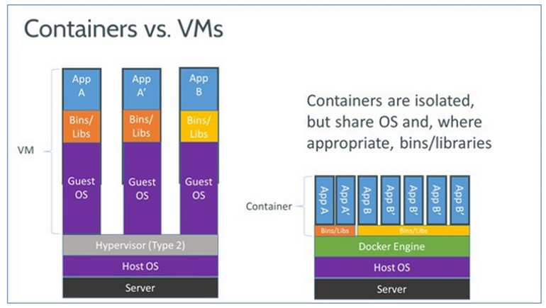
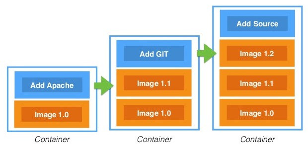
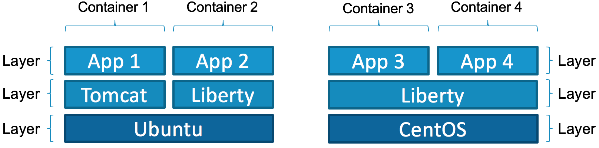
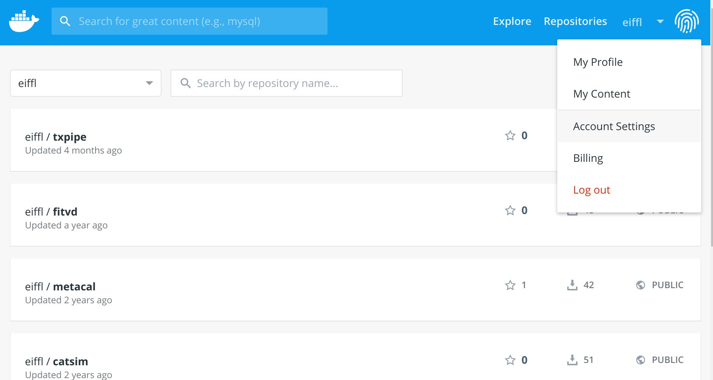
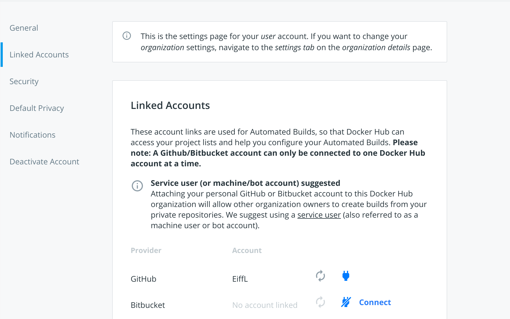
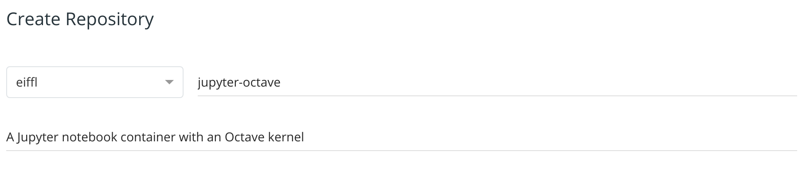
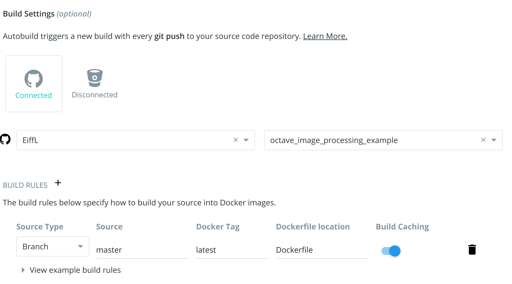

In this codelab you will learn how to use Docker to package your software tools for painless distribution and easy reproducibility of your research.
We will use as an example the common case of building a container to distribute Jupyter notebooks, for instance accompanying a paper or for a tutorial. Here is the tutorial we will be looking at: https://github.com/CosmoStat/octave_image_processing_example.
We will assume that you have pre-installed the Docker command line tools on your
machine. You can find OS specific instructions for installing Docker at the following links:
pacman -S dockerDon't hesitate to suggest modifications or report issues through GitHub [feedback link].
Before diving into this tutorial, we will first try to understand what is a container, and how it differs from a virtual machine.
Any software you might build is never completely standalone, it depends on external libraries and is typically compiled for a specific OS.
So how do you make sure someone else can use your code on their own machine?
In principle, you would have to exactly specify all the libraries you use, and leave it to the user to install those. Even then, you typically cannot guarantee that your code will 100% reproduce the expected results as the behavior of some of these external libraries might change between versions and might be environment specific.
The solution: packaging not only your code, but a complete environment including all external libraries. This is what a container does.

This is reminiscent of what virtual machines used to do, remember virual box and VMware? But there is one crucial difference:
Not only are containers lighter than VM since they don't need to run full guest OSes, they can also share some common libraries/tools between several containers.
In order to make this work, containers are build by layers. You can add a new layer on top of an existing container, for instance to add a new library, and you get a new container, but the base layers will be identical between the two.

This means that if you build 10 containers for 10 small executables, but based on the same base container you only need to store the base and the 10 small different additional layers.
Here is an illustration that shows how different containers built out of same or different base containers share common layers:

Alright, so now that we have a little idea of what a container is, the next step is to use one :-)
The first step will be to download a minimal container from DockerHub, a central repository for docker containers. You can search this repository and find many useful and already built images for many software. To retrieve a container from this repository, you simply use the docker pull command.
To get started, let's use the minimal Alpine Linux container available here. This is an official image provided by Docker, with only a 5 MB footprint.
Let's go ahead and download it from the command line:
$ docker pull alpine
Using default tag: latest
latest: Pulling from library/alpine
cbdbe7a5bc2a: Pull complete
Digest: sha256:9a839e63dad54c3a6d1834e29692c8492d93f90c59c978c1ed79109ea4fb9a54
Status: Downloaded newer image for alpine:latest
docker.io/library/alpine:latest
Success! What we see here is that Docker is pulling the latest version of that image from the repository.
Now that the image is downloaded, we can run commands from that container. Let's start with the following:
$ docker run -it alpine sh
/ #
What happened here? We are now using the docker run command, this starts a new process using the executable sh from the image alpine. The -it is necessary for interactive commands. And what we see on the prompt of the second line is now the shell prompt from the container.
At this point, you can look around, everything you do is in the container, isolated from the host system:
/ # ls
bin etc lib mnt proc run srv tmp var
dev home media opt root sbin sys usr
what we see here is the content of the root directory of the container.
To exit the container, just exit the shell:
/ # exit
$
Here we have started a shell inside the container, but you can also call any other binary from the container like so:
$ docker run -it alpine ls
bin etc lib mnt proc run srv tmp var
dev home media opt root sbin sys usr
At this point, you may realize that there is an issue, this ls command is only showing the files from inside the image, not the files on your current directory. Luckily, we can fix that!
s In the previous example, the container filesystem was completely isolated from the host, so that's moderately useful, you want to be able to see your local files. You can do that by mounting your local folder on a given directory inside the image with the -v [host directory]:[image directory] flag. Here is an example where we mount the local folder to /workdir inside the image:
$ docker run -v ${PWD}:/workdir -it alpine ls /workdir
assets docker-introduction
codelab_notes.txt tutorial.md
and now we see the files of our current folder.
So this is how you access your data from the container.
Now that we understand the basics of Docker, we can move on to the actual problem we want to solve in this tutorial, how can Fadi distribute his Octave notebooks and hope that people can actually run them on their own machine?
We will begin by forking a copy of Fadi's original repository, and clone it locally. Follow these steps:
$ git clone git@github.com:CosmoStat/octave_image_processing_example.git
Use HTTPS option in the box above to switch to HTTPS downloading, it would then look like this:$ git clone https://github.com/CosmoStat/octave_image_processing_example.git
cd into this cloned directory:$ cd octave_image_processing_example
$ ls
apt.txt canards.png environment.yml filtre_min.m README.md
canards_gauss.mat canards_poivre.mat example.ipynb generate_data.m
canards.mat canards_sel.mat filtre_max.m moyenneur.m
$ jupyter notebook
Hopefully you have jupyter installed, but maybe not, and even if you do try opening example.ipynb with jupyter, chances are that won't work because you don't have Octave installed.
We are now going to see how to use Docker to make sure people can run the notebook on their machine without having to install anything.
We are going to build an image that contains all of the environment required to run jupyter notebooks with the Octave kernel, and also package the tutorial contents.
To define a new Docker container, you need to create an empty text file name Dockerfile in the current directory. Now in this file we will add the following content:
FROM jupyter/base-notebook
LABEL Description="Jupyter Octave"
USER root
RUN apt-get update && \
apt-get install -y gnuplot octave && \
apt-get clean
USER jovyan
RUN pip install octave_kernel && \
export OCTAVE_EXECUTABLE=$(which octave)
Let's unpack what's going on here:
FROM jupyter/base-notebook
This tells Docker that your container will inherit the jupyter/base-notebook image, which you can see here. In general, it is good practice for you to try to base your container on an existing and popular one containing most of the environment you want already, instead of composing an image from a bare linux.
USER root
This instruction tells Docker that the following commands will be executed as root which allows you to install system packages.
RUN apt-get update && \
apt-get install -y gnuplot octave && \
apt-get clean
This is the main part of the Dockerfile, here we use the RUN command, to run a command inside the container, here, it's in order to install additional packages. We run the standard Ubuntu package manager to install gnuplot and octave which were not already on the image. The apt-get clean part is to remove any unnecessary cached files at the end of this install.
USER jovyan
RUN pip install octave_kernel && \
export OCTAVE_EXECUTABLE=$(which octave)
Finally here, what we are doing is switching to the jovyan user, the standard non-privileged user for the jupyter image, defined in the base image, and installing Python packages as a normal user. We simply add the octave_kernel so that Jupyter knows how to run Octave code.
And that's it, that's all there is to writing a Dockerfile, it's just a series of RUN commands that you can use to install any tools/libraries you need.
Now the next step is to build your container from this Dockerfile description.
Given the Dockerfile defined at the previous step, we can now tell Docker to process it in order to build your new container. This is done with the docker build command. Assuming you are still in the same folder as your Dockerfile, just run:
$ docker build -t jupyter-octave .
This instructs Docker to process the local directory ., parse your Dockerfile, and build a new image that will be tagged jupyter-octave version 1.0 thanks to the -t flag.
Running this command, you will see Docker first pull all the layer of the base image, and then execute the RUN commands you have defined. In principle everything should work :-)
Once built, let's try to use it to start a Jupyter notebook with an Octave kernel. From your current directory, run:
$ docker run -p 8888:8888 -v ${PWD}:/home/jovyan/work -it jupyter-octave
What we are doing here, is running our newly created jupyter-octave container, using the -v flag we have seen before to mount our local directory inside the container, and the new -p flag to forward the 8888 port which is where the jupyter notebook server will be listening in for connections. Note that we are not telling Docker to run any particular commands at the end, in this case, Docker will default to an ENTRYPOINT defined in the parent container, and automatically start jupyter-notebook.
Jupyter should start inside the container and give you a message like this:
[C 08:52:00.695 NotebookApp]
To access the notebook, open this file in a browser:
file:///home/jovyan/.local/share/jupyter/runtime/nbserver-6-open.html
Or copy and paste one of these URLs:
http://bc85b42df82d:8888/?token=085a531b2df604a9089320c09af9601135604e607ace921b
or http://127.0.0.1:8888/?token=085a531b2df604a9089320c09af9601135604e607ace921b
Just follow the last link in http://127.0.0.1:8888... and open it in your web browser. And tadaa! you are now accessing the Jupyter notebook running in your container!
Go on to the work/example.ipynb notebook, and you should now be able to run Octave code without issues.
The last step is publishing your docker image so that others can use it easily. To do that, we will want to push it to DockerHub.
We will use DockerHub to automatically build your container from your git repository. In order to set that up, let's start by adding your Dockerfile to the repository:
$ git add Dockerfile
$ git commit -m "Adding Docker container file"
$ git push
This updates your fork of Fadi's repository to include the Dockerfile. To make sure that worked, you can check that you see the Dockerfile on GitHub.
We will need a Docker Hub account, you can sign up for one here:
or if you already have an account, you can sign-in here: https://hub.docker.com/sso/start
Now that you are connected on DockerHub go to Account Settings

And in the Linked Accounts tab, click the Connect button for GitHub:

Follow the instructions, and grant DockerHub access to repos under your account on GitHub.
Now that everything is setup, you can go back to the landing page of DockerHub at this link: https://hub.docker.com/ and click the Create Repository blue button on the top right.
jupyter-octave, and add a short description in the field below: Build Settings, click on the GitHub icon and navigate to your fork of the repo. Next to the BUILD RULES header, click the + sign to add a build rule, and by default DockerHub will propose a build rule looking for your Dockerfile at the root of the master branch of your repository. It should look like this: And finally click the Create & Build button!
This will bring you to the page of your newly minted container! Head over to the Builds tab to see the status of your automated build.
As soon as you see that your build is ready, you can pull it on your local computer:
$ docker pull [your dockerhub name]/jupyter-octave
And done! Anyone on earth can now run your notebooks without having to install Jupyter or Octave on their machine !
You are now a Docker Guru :-) Or at least a Docker baby Yoda.
We have covered the basics of how to use Docker but glossed over a lot of details and features. If you want to know more, Google is your friend, there are tons of tutorial out there. But here are some useful references:
Happy containerization!!!!